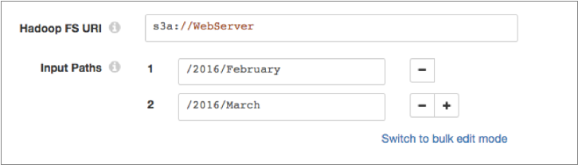

Hadoop FS
Supported pipeline types:
|
- Cluster batch mode
- Cluster batch mode pipelines use a Hadoop FS origin and run on a Cloudera distribution of Hadoop (CDH) or Hortonworks Data Platform (HDP) cluster to process data from HDFS, Amazon S3, or other file systems using the Hadoop FileSystem interface.
- Cluster EMR batch mode
- Cluster EMR batch mode pipelines use a Hadoop FS origin and run on an Amazon EMR cluster to process data from Amazon S3.
For more information about cluster pipelines, see Cluster Pipeline Overview. To read from HDFS in standalone execution mode, use the Hadoop FS Standalone origin.
When you configure the Hadoop FS origin, you specify the input path and data format for the data to be read. You can configure the origin to read from all subdirectories and to generate a single record for records that include multiple objects.
The origin reads compressed data based on file extension for all Hadoop-supported compression codecs.
When necessary, you can enable Kerberos authentication and specify a Hadoop user. You can also use Hadoop configuration files and add other Hadoop configuration properties as needed.
The Hadoop FS origin generates record header attributes that enable you to use the origins of a record in pipeline processing.
Reading from Amazon S3
The Hadoop FS origin included in a cluster batch or cluster EMR batch pipeline allows you to read from Amazon S3.
To
read from Amazon S3, specify the appropriate URI for Amazon S3 when you configure the
Hadoop FS origin. Use the s3a scheme in the URI. S3A is the active
connector maintained by open source Hadoop and is the only connector that works with
Hadoop and Amazon S3.
Configure the URI to point to the Amazon S3 bucket to read from, as follows:
s3a://<bucket>s3a://WebServerThen in the Input Paths property, enter the full path to the data to be read within that Amazon S3 bucket. You can enter multiple paths for the Input Paths property, as follows:

For additional requirements when using the Hadoop FS origin to read from Amazon S3, see Amazon S3 Requirements.
Reading from Other File Systems
The Hadoop FS origin included in a cluster batch pipeline allows you to read from file systems other than HDFS using the Hadoop FileSystem interface.
For example, you can use the Hadoop FS origin to read data from Microsoft Azure Data Lake Storage for a cluster batch pipeline if the origin system has the Hadoop FileSystem interface installed.
- Make sure the Hadoop FileSystem interface is installed on the file system.
- Install all required file system application JAR files as external libraries for the Hadoop FS stage library that you use. See the file system documentation for details about the files to install. For instructions on installing external libraries, see Install External Libraries.
- When you configure the Hadoop FS origin, specify the appropriate URI for the origin system. For example, instead of hdfs://<authority>, to connect to Azure Data Lake Storage, you might use adls://<authority>.
Kerberos Authentication
You can use Kerberos authentication to connect to HDFS. When you use Kerberos authentication, Data Collector uses the Kerberos principal and keytab to connect to HDFS. By default, Data Collector uses the user account who started it to connect.
The Kerberos principal and keytab are defined in the Data Collector
configuration file, $SDC_CONF/sdc.properties. To use Kerberos
authentication, configure all Kerberos properties in the Data Collector
configuration file, and then enable Kerberos in the Hadoop FS origin.
For more information about enabling Kerberos authentication for Data Collector, see Kerberos Authentication.
Using a Hadoop User
Data Collector can either use the currently logged in Data Collector user or a user configured in the Hadoop FS origin to read from HDFS.
A Data Collector configuration property can be set that requires using the currently logged in Data Collector user. When this property is not set, you can specify a user in the origin. For more information about Hadoop impersonation and the Data Collector property, see Hadoop Impersonation Mode.
Note that the origin uses a different user account to connect to HDFS. By default, Data Collector uses the user account who started it to connect to external systems. When using Kerberos, Data Collector uses the Kerberos principal.
- On Hadoop, configure the user as a proxy user and
authorize the user to impersonate a Hadoop user.
For more information, see the Hadoop documentation.
- In the Hadoop FS origin, on the Hadoop FS tab, configure the Hadoop FS User property.
Hadoop Properties and Configuration Files
- Hadoop configuration files
- You can use the following Hadoop configuration files with the Hadoop FS
origin:
- core-site.xml
- hdfs-site.xml
- yarn-site.xml
- mapred-site.xml
- Individual properties
- You can configure individual Hadoop properties in the origin. To add a
Hadoop property, you specify the exact property name and the value. The
Hadoop FS origin does not validate the property names or
values.Note: Individual properties override properties defined in the Hadoop configuration files.
Record Header Attributes
The Hadoop FS origin creates record header attributes that include information about the originating file for the record.
You can use the record:attribute or record:attributeOrDefault functions to access the information in the attributes. For more information about working with record header attributes, see Working with Header Attributes.
- file - Provides the file path and file name where the record originated.
- offset - Provides the file offset in bytes. The file offset is the location in the file where the record originated.
Data Formats
- Avro
- Generates a record for every Avro record. Includes a
precisionandscalefield attribute for each Decimal field. - Delimited
- Generates a record for each delimited line. You can use the
following delimited format types:
- Default CSV - File that includes comma-separated values. Ignores empty lines in the file.
- RFC4180 CSV - Comma-separated file that strictly follows RFC4180 guidelines.
- MS Excel CSV - Microsoft Excel comma-separated file.
- MySQL CSV - MySQL comma-separated file.
- Tab-Separated Values - File that includes tab-separated values.
- PostgreSQL CSV - PostgreSQL comma-separated file.
- PostgreSQL Text - PostgreSQL text file.
- Custom - File that uses user-defined delimiter, escape, and quote characters.
- Multi Character Delimited - File that uses multiple user-defined characters to delimit fields and lines, and single user-defined escape and quote characters.
- Text
- Generates a record for each line of text or for each section of text based on a custom delimiter.
Configuring a Hadoop FS Origin
-
On the Hadoop FS tab, configure the following
properties:
Hadoop FS Property Description Hadoop FS URI Optional URI to use. To read from HDFS, include the HDFS scheme and authority as follows: <scheme>://<authority>.For example:hdfs://nameserviceTo read from Amazon S3 or other file systems using the Hadoop FileSystem interface, enter the appropriate URI for the system. For more information, see Reading from Amazon S3 or Reading from Other File Systems.
When not configured, the destination uses the URI defined by the fs.defaultFS property in the core-site.xml file.
Input Paths Location of the input data to be read. Enter the path as follows: /<path>.For example:/user/hadoop/directoryInclude All Subdirectories Reads from all directories within the specified input path. Produce Single Record Generates a single record when a record includes multiple objects. Kerberos Authentication 
Uses Kerberos credentials to connect to HDFS. When selected, uses the Kerberos principal and keytab defined in the Data Collector configuration file,
$SDC_CONF/sdc.properties.Note: Cluster EMR batch mode pipelines that read from Amazon S3 do not support Kerberos authentication at this time.Hadoop FS Configuration Directory Location of the Hadoop configuration files.
For a Cloudera Manager installation, enter
hadoop-conf. For all other installations, use a directory or symlink within the Data Collector resources directory.You can use the following files with the Hadoop FS origin:- core-site.xml
- hdfs-site.xml
- yarn-site.xml
- mapred-site.xml
Note: Properties in the configuration files are overridden by individual properties defined in the stage.Hadoop FS User The Hadoop user to use to read from HDFS. When using this property, make sure HDFS is configured appropriately. When not configured, the pipeline uses the currently logged in Data Collector user.
Not configurable when Data Collector is configured to use the currently logged in Data Collector user. For more information, see Hadoop Impersonation Mode.
Hadoop FS Configuration Additional Hadoop configuration properties to use. To add properties, click Add and define the property name and value.
Use the property names and values as expected by Hadoop.
Max Batch Size (records) Maximum number of records processed at one time. Honors values up to the Data Collector maximum batch size. Default is 1000. The Data Collector default is 1000.
-
On the Data Format tab, configure the following
property:
Data Format Property Description Data Format Type of data to be read. Use one of the following options:- Avro
- Delimited
- Text
-
For text data, on the Data Format tab, configure the
following properties:
Text Property Description Max Line Length Maximum number of characters allowed for a line. Longer lines are truncated. Adds a boolean field to the record to indicate if it was truncated. The field name is Truncated.
This property can be limited by the Data Collector parser buffer size. For more information, see Maximum Record Size.
Use Custom Delimiter 
Uses custom delimiters to define records instead of line breaks. Custom Delimiter One or more characters to use to define records. Charset Character encoding of the files to be processed. Ignore Control Characters Removes all ASCII control characters except for the tab, line feed, and carriage return characters.